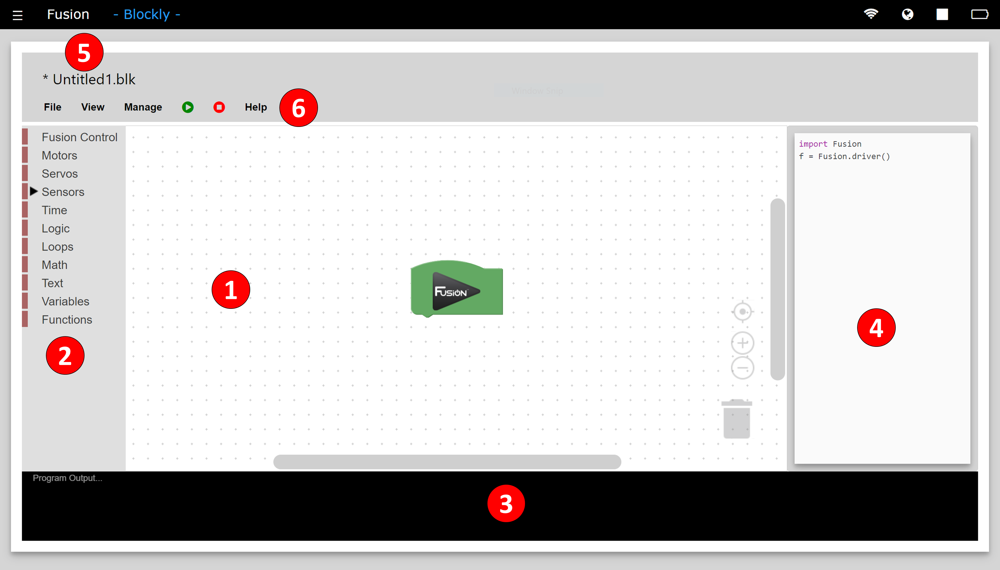

Blockly Reference Guide
Blockly is a visual programming environment designed for beginner programmers aimed to teach programming techniques. Blocky for Fusion comes with Basic and Intermediate modes which adds another level of complexity.
Basic Blockly comes with blocks to control the motors which will drive and rotate the robot. There are also blocks to toggle the on-board yellow and blue LEDs on and off.
Intermedaite mode comes with more complex blocks to control motors independently, control servos and our entire range of sensors. 1) Program Environment
- This is the space where blocks are placed and connected to create programs.
- There are both vertical and horizontal scrolling bars for navigating larger programs.
- The icons in the bottom right are used to help you view your environment and delete blocks.
- The reticle is used to center the block program within the program environment.
- The + icon is used to zoom in on the program.
- The - icon is used to zoom out from the program.
- The trashcan icon is used to delete a block or chunk of blocks by dragging the blocks over the trashcan.
2) Toolbox
- Contains all available programming blocks organized by category.
3) Program Output
- This window can be toggled on and off.
- Displays the output of the program like a print block or a controller generated error.
4) Code Window
- This window can be toggled on and off.
- Displays the Python code that is produced by the blocks. This code can be copied, pasted and run directly from the Editor.
5) Program Name
- The name of the current active program.
- All files are given the extension of .blk.
- If a * is next to the name of the program, then the program has been changed and not saved.
6) Toolbar
- File - Gives the option to Create, Open, Close, Save and Delete a program.
- View - Switch modes between Basic and Intermediate, also to show/hide the Program Output and Code Window.
- Manage - Import or Export a Blockly file.
- Play - Start running the current program. If selected while a program is already running, the running program will stop and the current program will start running.
- Stop - Stops the current program. The Program Output returns information about when the program stopped.
- Help - Access controller and sensor examples as well as a link to the documentation.
Use Guide
1. Create a program (Basic & Intermediate)
Basic Block Reference
1. Control Robot
2. Move Robot
3. Rotate Robot
Intermediate Block Reference
1. Control Robot
2. Motor Control
3. Servo Control
4. Analog/Digital Sensors
5. Compass (45-2003)
6. Rate Gyro (45-2004)
7. Integrating Gyro (45-2005)
8. Optical Distance Sensor (45-2006)
9. Touch Sensor (45-2007)
10. Range Sensor (45-2008)
11. Infrared Locator 360° (45-2009)
12. Light Sensor (45-2015)
13. Sound Generator (45-2016)
14. Infrared Seeker V3 (45-2017)
15. Color Sensor (45-2018)
16. Color Beacon (45-2019)
17. Magnetic Sensor(45-2020)
18. Time
19. Logic
20. Loops
21. Text
22. Variables